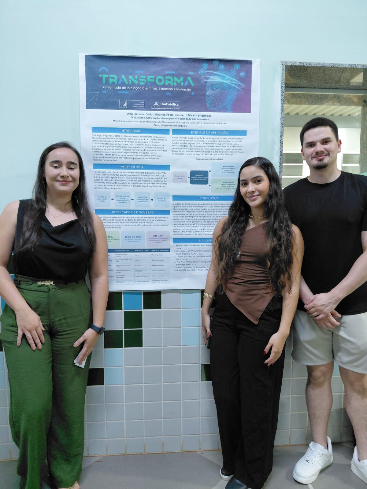
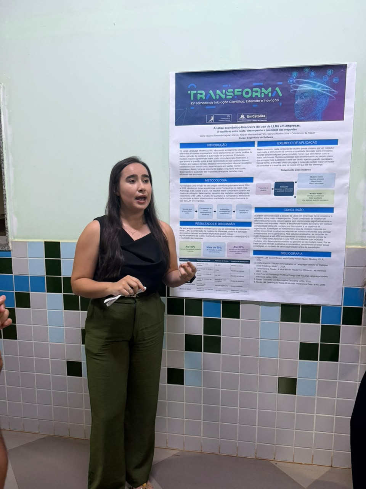
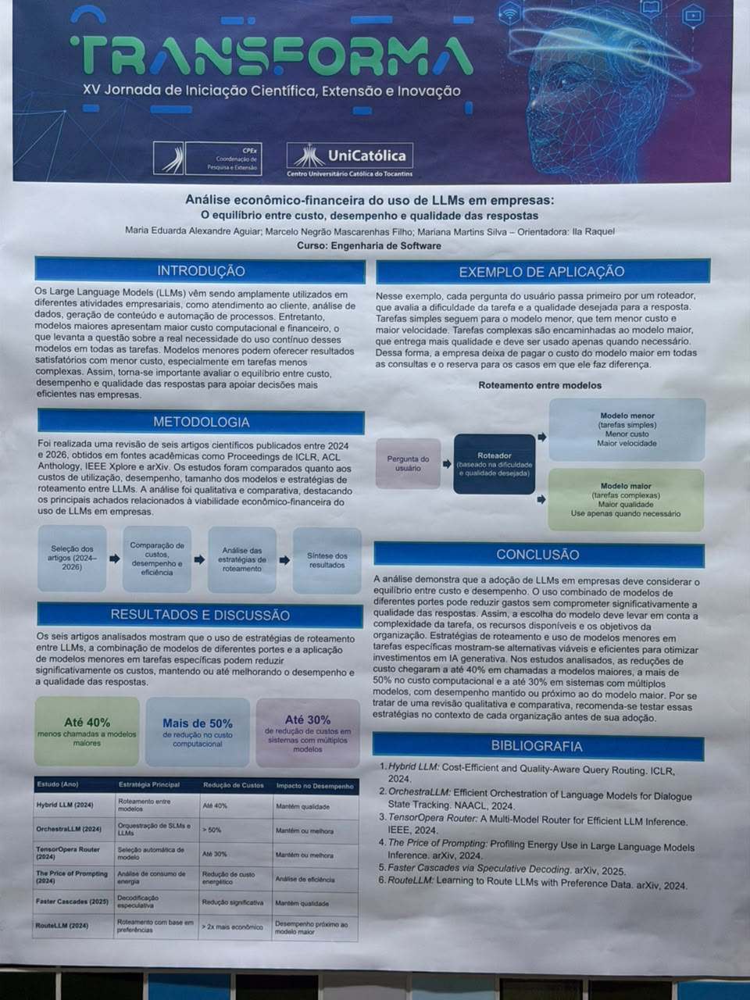

No dia 7 de outubro, foi apresentado o trabalho “Análise econômico-financeira do uso de LLMs em empresas: o equilíbrio entre custo, desempenho e qualidade das respostas”, durante a XV Jornada de Iniciação Científica, Extensão e Inovação — TRANSFORMA. A pesquisa discute como as empresas podem utilizar modelos de inteligência artificial de maneira mais eficiente, reduzindo despesas sem comprometer significativamente a qualidade dos resultados.

Desenvolvido por Maria Eduarda Alexandre Aguiar e Marcelo Negrão Mascarenhas Filho, do curso de Engenharia de Software, sob orientação de Ila Raquel, o estudo aborda o uso dos Grandes Modelos de Linguagem, conhecidos pela sigla LLMs, em atividades como atendimento ao cliente, análise de dados, geração de conteúdo e automação de processos.
Embora esses modelos ofereçam diferentes possibilidades de aplicação, sua utilização pode envolver custos computacionais e financeiros elevados. Diante desse cenário, a pesquisa investigou estratégias capazes de tornar o uso da inteligência artificial mais econômico, considerando também o desempenho e a qualidade das respostas fornecidas.

Para desenvolver o estudo, foi realizada uma revisão qualitativa e comparativa de seis artigos científicos publicados entre 2024 e 2026. Os trabalhos analisados abordam diferentes estratégias de roteamento de solicitações entre modelos de inteligência artificial, permitindo avaliar alternativas para selecionar o sistema mais adequado conforme a complexidade de cada tarefa.
Entre os resultados destacados no banner, estão reduções de até 40% nas chamadas a modelos maiores, economias superiores a 50% no custo computacional e reduções de até 30% em sistemas que utilizam múltiplos modelos. Os percentuais foram identificados na literatura analisada e demonstram o potencial dessas estratégias para otimizar recursos.
Uma das soluções discutidas consiste em utilizar modelos menores para tarefas simples, que exigem menos processamento, enquanto os modelos maiores ficam responsáveis por solicitações mais complexas. Dessa forma, o encaminhamento inteligente das demandas pode contribuir para diminuir gastos e manter um nível satisfatório de qualidade nas respostas.

A pesquisa também ressalta que a escolha das ferramentas deve levar em consideração fatores como a complexidade das solicitações, os recursos computacionais disponíveis e os objetivos de cada empresa. Nesse sentido, a adoção da inteligência artificial exige não apenas decisões tecnológicas, mas também planejamento econômico e avaliação contínua dos resultados.
Nas considerações finais, o trabalho aponta que estratégias de roteamento e utilização de modelos de diferentes portes podem representar alternativas viáveis para tornar a inteligência artificial generativa mais eficiente e acessível às organizações. Os pesquisadores recomendam, contudo, que essas soluções sejam testadas de acordo com as necessidades e as características de cada contexto empresarial.
A apresentação reforçou a importância da pesquisa científica para compreender os impactos econômicos das novas tecnologias e contribuir para decisões mais conscientes sobre o uso da inteligência artificial. Ao aproximar inovação tecnológica e gestão de recursos, o estudo destaca caminhos para que as empresas aproveitem os benefícios dos LLMs de maneira mais sustentável e eficiente.